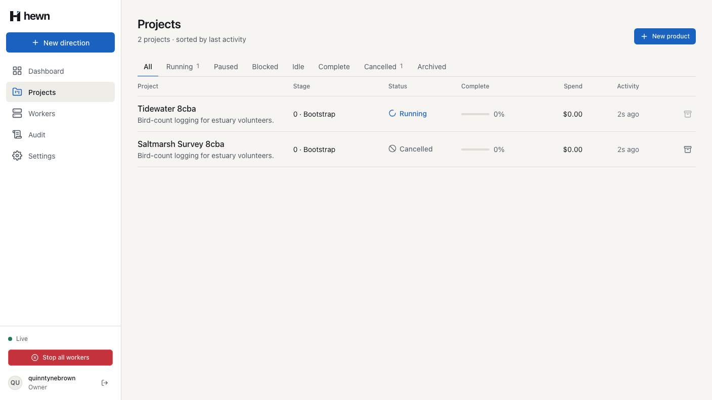
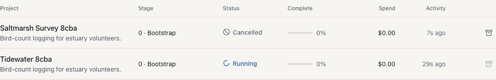
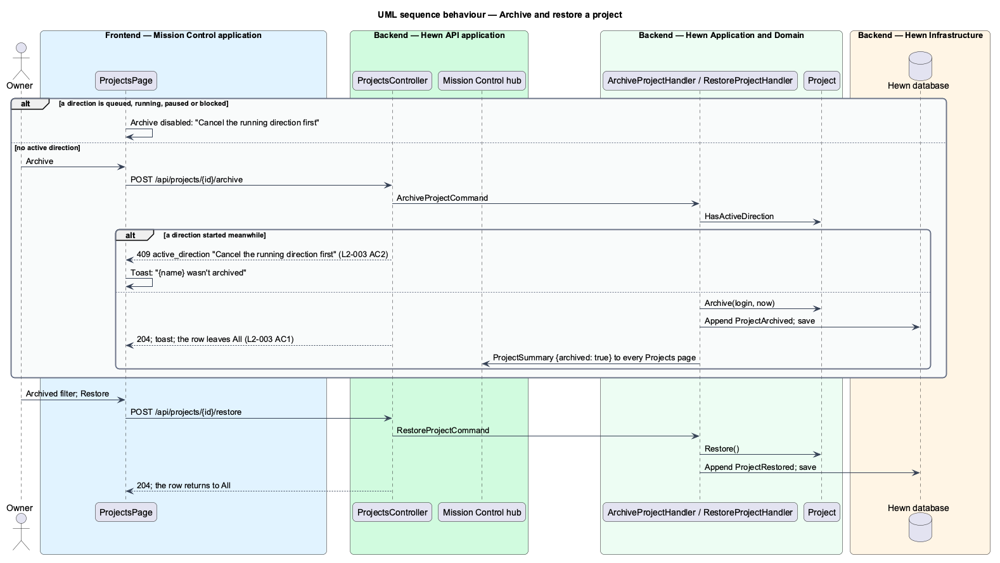
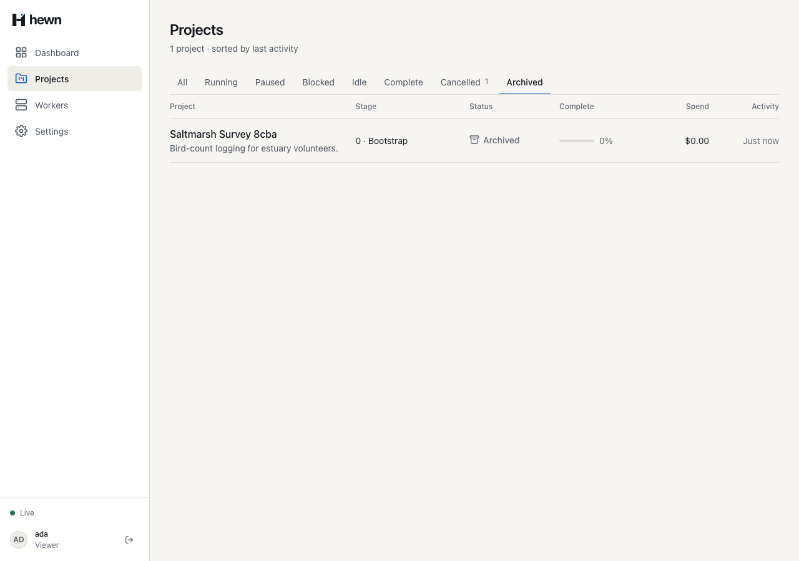
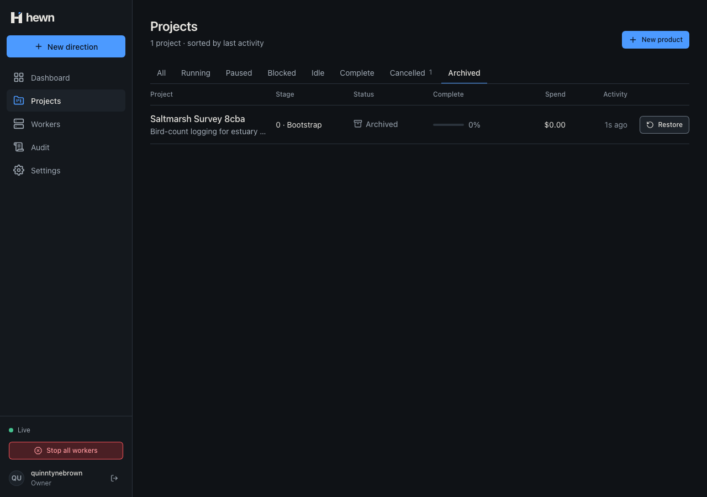
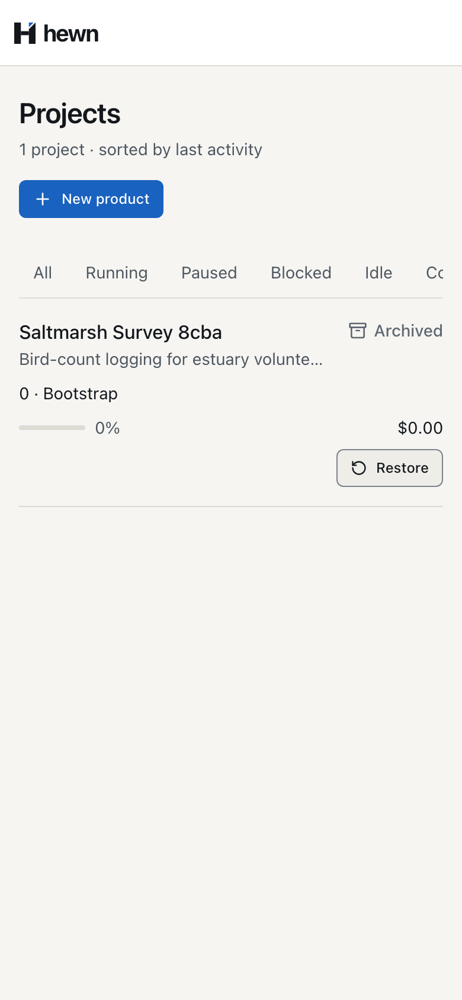

Hide what's finished; bring it back when it matters again.


var project = await db.Projects.Include(p => p.Directions)
.SingleOrDefaultAsync(p => p.Id == command.ProjectId, cancellationToken)
?? throw new NotFoundException();
if (project.HasActiveDirection)
{
throw new ConflictException("active_direction", "Cancel the running direction first");
}
if (!project.Archive(user.Login, clock.GetUtcNow()))
{
return;
}
await events.AppendAsync(project.Id, "ProjectArchived", new { by = user.Login }, cancellationToken);
await db.SaveChangesAsync(cancellationToken);
await events.PublishAsync(cancellationToken);
/// <summary>True while a direction is queued, running, paused or blocked; archiving is refused then (L2-003 AC2).</summary>
public bool HasActiveDirection => _directions.Any(d => d.IsActive);
if (project.IsArchived)
{
throw new ConflictException("project_archived", "Restore the project first");
}
export function withStatus(
rows: readonly ProjectSummary[],
filter: ListFilter | null,
): ProjectSummary[] {
if (filter === 'Archived') return rows.filter((r) => r.archived);
return rows.filter((r) => !r.archived && (filter === null || r.status === filter));
}
/** A project with a running, paused or blocked direction can't be archived (L2-003 AC2). */
export function canArchive(row: ProjectSummary): boolean {
return !row.archived && !['Running', 'Paused', 'Blocked'].includes(row.status);
}

public async Task A_project_with_an_active_direction_is_not_archived()
{
var (owner, projectId, _) = await ProjectAsync();
var response = await owner.PostAsync($"/api/projects/{projectId}/archive", new { });
Assert.Equal(HttpStatusCode.Conflict, response.StatusCode);
var problem = await HewnClient.ReadJsonAsync(response);
Assert.Equal("active_direction", problem.GetProperty("code").GetString());
Assert.Equal("Cancel the running direction first", problem.GetProperty("title").GetString());
Assert.False((await RowAsync(owner, projectId)).GetProperty("archived").GetBoolean());
Assert.DoesNotContain("ProjectArchived", await EventTypesAsync(owner, projectId));
}
test('a project with an active direction is not archived', async ({ page, projects }) => {
await signIn(page, 'quinntynebrown');
const name = uniqueName('Tidewater');
const projectId = await aProjectNamed(page, name, { idle: false });
try {
await projects.open();
const row = projects.row(name);
await expect(row.archive).toHaveCount(0);
await expect(row.archiveRefused).toHaveAttribute('title', 'Cancel the running direction first');
await expect(row.archiveRefused).toHaveAccessibleName(`Archive ${name}: cancel the running direction first`);
await row.archiveRefused.click({ force: true });
await expect(projects.toasts).toHaveCount(0);


